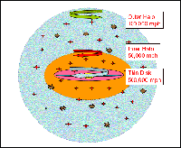

December 12, 2007
The Galaxy's outer regions spin both ways at once
|
+ enlarge  |
|
This illustration shows the discovery that the outer Milky Way is a really a mixture of two distinct components rotating in opposite directions. The inner component of the Galaxy's halo spins clockwise with the Galaxy's rotation at about 50,000 miles per hour. The outer component rotates counterclockwise to the Galaxy at 100,000 miles per hour.
The international discovery team of the Sloan Digital Sky Survey (SDSS-II) used data to demonstrate that the inner part of the halo is more flattened, and dominates the population of stars up to 50,000 light years from the Milky Way's center. The outer halo is more spherical, and dominates the population beyond 65,000 light years from the Galactic center. It may extend out to more than 300,000 light years. SDSS-II scientists believe that the two components were made of smaller or dwarf galaxies torn apart and accreted into the Milky Way. They also found differences in the chemical compositions of the inner and outer halos. (Credit - SDSS-II, Masashi Chiba, Tohoku University, Japan) |
Using 20,000 stars observed by the Sloan Digital Sky Survey (SDSS-II), an international team of astronomers has discovered that the outer Milky Way is a mix of two distinct components rotating in opposite directions.
"By examining the motions and chemical makeup of the stars, we can see that the inner and outer halos are quite different beasts and they probably formed in different ways at different times," explained Daniela Carollo, a researcher at the Italy's Torino Observatory and the Australian National University.
"Two stellar components in the halo of the Milky Way," the paper describing the discovery, appears in the December 12, 2007 edition of the journal Nature. In addition to Carollo, the lead author, the team's principal investigators include Timothy C. Beers of Michigan State University, John E. Norris of The Australian National University and Masashi Chiba of Japan's Tohoku University.
"Although it was once considered a single structure, an analysis of the 20,000 stars from SDSS-II shows that the halo is clearly divisible into two, broadly overlapping components," explained Beers. "The discovery gives us a much clearer picture of the formation of the first objects in our Galaxy and in the entire Universe."
The discovery was a year in the making. Beers explained that Carollo came to Michigan State University in 2006 to carry out a straightforward comparison between SDSS-II measurements and data about the standard model of galaxy formation. "But as we looked at the velocity and chemical composition of the halo data more closely, the evidence for distinct inner and outer halos became unmistakable."
To get a sense of one dimension — rotational speed — examine our Sun. It is a part of a disk of stars orbiting around the center of the Galaxy at an astounding 500,000 miles per hour. The inner halo, located well outside the disk, rotates in the same direction, but more slowly, at 50,000 miles per hour. The outer halo, the most remote of these components, spins in the opposite direction, at about 100,000 miles per hour.
The difference in chemical composition opens another door to discovery of the Galaxy's birth. According to Carollo, inner-halo stars contain three times more heavy atoms — such as iron and calcium — than outer-halo stars. These heavy atoms were forged in early forming massive stars and ejected during the star's death— a supernova explosion. Later forming stars, such as those observed in this study, form from gas that has recorded the composition of all of the stellar generations that preceded it.
"Inner- and outer-halo stars both pass near the sun as they move through the Galaxy," explained Carollo. "Measuring both their motions and their chemical compositions allows us to separate them into these two halo families."
"Daniela, Tim, and the rest of their team have proven without a doubt that the Milky Way halo was not assembled all at once at early times," stated Yale University's Jason Tumlinson. "Astronomers have suspected for about 30 years that the outer parts of the Milky Way galaxy were assembled over time from many smaller protogalactic pieces. Now the SDSS-II team has shown that this is true even in the inner parts of the galaxy, and they've done it with a sample of stars large enough to banish all doubt."
Tumlinson, a galaxy formation theorist who was not part of the discovery team, said it was possible that stars from the "outer halo" are among the oldest parts of the Milky Way. "Speaking as a theorist who tries to build computer models of the construction of the Milky Way, I find this result inspiring in its statistical power, and yet frustrating at the same time as we are still struggling to build models with enough detail to adequately explain the observations."
What does it all mean? Chiba and the team believe that the inner halo formed first from the collision of smaller but massive galaxies that rotated with the Galaxy. The outer halo formed later from small galaxies orbiting the Milky Way in the reverse direction. These were torn apart by the Milky Way's gravitational forces, dispersing their stars into the halo. "We still have a lot to understand," admitted Chiba.
Beers and Norris have spent years searching for the most chemically primitive stars in the galaxy. Their heavy atoms may come from just a handful of early supernova, so their patterns of chemical elements provide "archeological" clues to the properties of stars that formed in the first billion years after the Big Bang.
These fossils of the early universe are extremely rare, Norris explained, so finding them remains a classic "needle-in-a-haystack problem." The identification of a chemically distinct outer halo "gives us a much better way to search the haystack."
More data are on the way. The Sloan Extension for Galactic Understanding and Exploration (SEGUE) is more than halfway to its goal of measuring motions and compositions for 250,000 stars. "With 10 times as many stars," noted Beers, "there are bound to be more surprises in store."
About the Sloan Digital Sky Survey (www.sds.org)
Sloan Digital Sky Survey is the most ambitious survey of the sky ever undertaken, involving more than 300 astronomers and engineers at 25 institutions around the world. SDSS-II, which runs from 2005-2008, is comprised of three complementary projects. The Legacy Survey is completing the original SDSS map of half the northern sky, determining the positions, brightness, and colors of hundreds of millions of celestial objects and measuring distances to more than a million galaxies and quasars. SEGUE (Sloan Extension for Galactic Understanding and Exploration) is mapping the structure and stellar makeup of the Milky Way Galaxy. The Supernova Survey repeatedly scans a stripe along the celestial equator to discover and measure supernovae and other variable objects, probing the accelerating expansion of the cosmos. All three surveys are carried out with special purpose instruments on the 2.5-meter telescope at Apache Point Observatory in New Mexico.
Funding for the SDSS and SDSS-II has been provided by the Alfred P. Sloan Foundation, the Participating Institutions, the National Science Foundation, the U.S. Department of Energy, the National Aeronautics and Space Administration, the Japanese Monbukagakusho, the Max Planck Society and the Higher Education Funding Council for England.
The SDSS is managed by the Astrophysical Research Consortium for the Participating Institutions. The Participating Institutions are the American Museum of Natural History, Astrophysical Institute Potsdam, University of Basel, University of Cambridge, Case Western Reserve University, University of Chicago, Drexel University, Fermilab, the Institute for Advanced Study, the Japan Participation Group, Johns Hopkins University, the Joint Institute for Nuclear Astrophysics, the Kavli Institute for Particle Astrophysics and Cosmology, the Korean Scientist Group, the Chinese Academy of Sciences (LAMOST), Los Alamos National Laboratory, the Max-Planck-Institute for Astronomy (MPIA), the Max-Planck-Institute for Astrophysics (MPA), New Mexico State University, Ohio State University, University of Pittsburgh, University of Portsmouth, Princeton University, the United States Naval Observatory and the University of Washington.